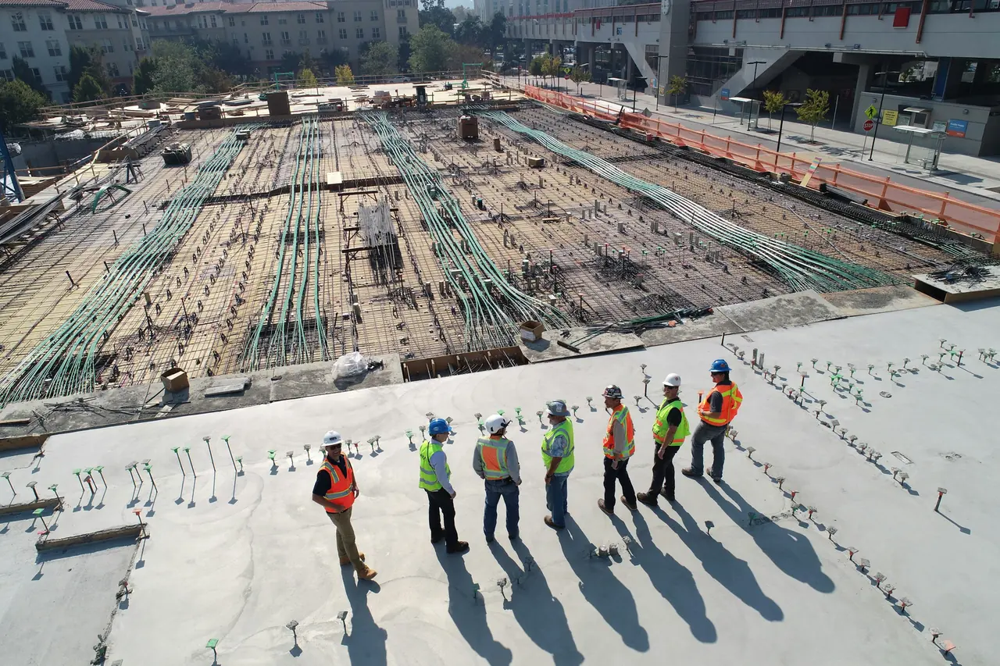
Immagine illustrativa- Home
- Servizi
Servizi per costruire e ristrutturare.
Dalla nuova costruzione alla ristrutturazione di un bagno: interventi seguiti con competenza tecnica e un cantiere organizzato.
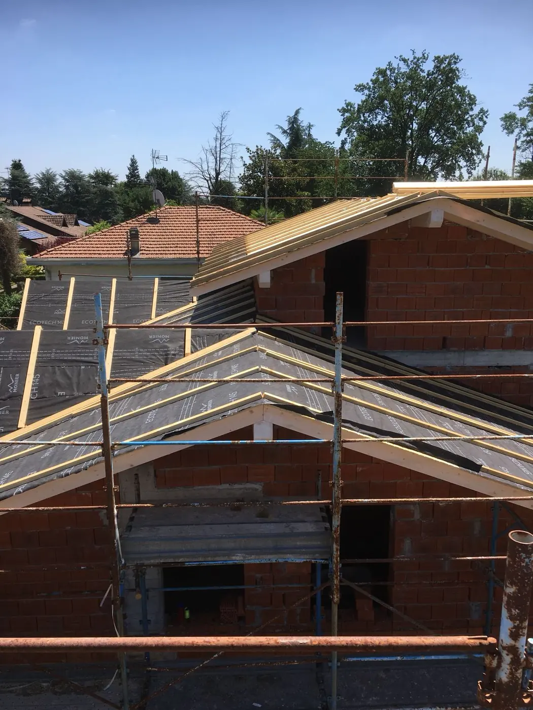
Nuove costruzioni
Realizziamo nuovi immobili seguendo l'intero percorso: dalle fondazioni alle strutture, fino alla copertura.
Le nuove costruzioni guardano alle tendenze costruttive e alle sfide ambientali, con attenzione a comfort ed efficienza energetica.
- Fondazioni e platee, anche per case in legno prefabbricate
- Tecnologie e materiali eco-sostenibili, come pannelli solari e sistemi di gestione energetica
- Integrazione di sistemi di automazione domestica
- Spazi interni adattabili, con soluzioni modulari e layout personalizzabili
- Sistemi di filtrazione dell'aria e ambienti pensati per il benessere
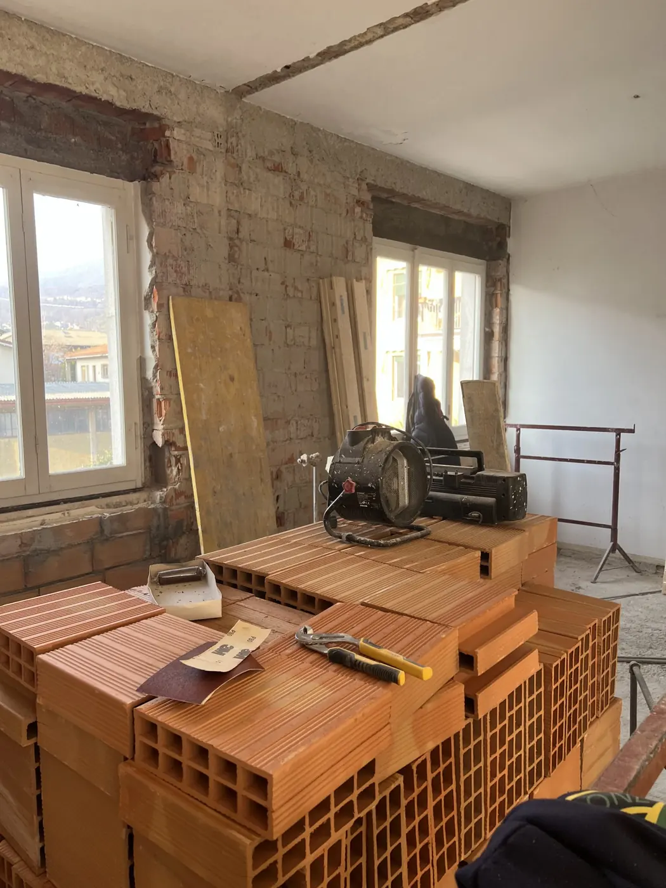
Ristrutturazioni complete e parziali
Trasformiamo la casa migliorandone qualità, funzionalità ed efficienza, con interventi totali o su singoli ambienti.
Seguiamo la ristrutturazione dalla valutazione iniziale alle finiture, coordinando le diverse lavorazioni.
- Valutazione delle condizioni attuali e consulenza sulle soluzioni possibili
- Progetto su misura con software CAD e BIM
- Demolizione e smaltimento dei materiali di risulta
- Rifacimento di murature, pavimenti e soffitti
- Aggiornamento di impianti elettrici, idraulici e di riscaldamento o raffrescamento
- Finiture di pavimenti, pareti e arredi
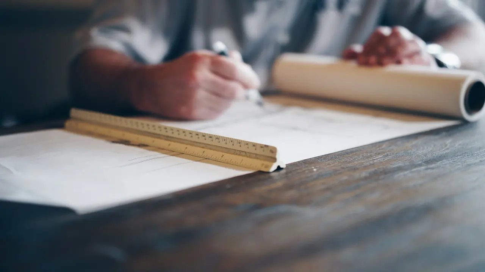
Immagine illustrativaProgettazione di immobili
Dal progetto ai disegni tecnici, con strumenti che permettono di vedere il risultato prima di costruire.
La progettazione riguarda sia le nuove costruzioni sia le ristrutturazioni totali o parziali.
- Software CAD (Computer Aided Drafting) e BIM (Building Information Modeling)
- Programmazione di tempi e costi
- Simulazioni video realistiche in 3D
- Progettazione strutturale per le opere in cemento armato
Se servono un tecnico per le pratiche comunali o la progettazione, lo valutiamo insieme durante il sopralluogo.
Richiedi informazioni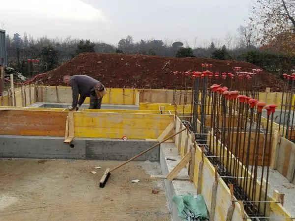
Gestione e coordinamento del cantiere
Organizziamo e programmiamo tutte le opere edili, impianti inclusi, per un lavoro ordinato dall'inizio alla consegna.
La gestione del cantiere punta a efficienza e precisione in ogni fase, secondo i principi della Lean Construction.
- Programmazione delle lavorazioni e delle fasi di cantiere
- Coordinamento di opere edili, impianti elettrici e impianti idraulici
- Standardizzazione dei processi di lavoro per ridurre gli sprechi di tempo
- Miglioramento continuo come criterio di lavoro
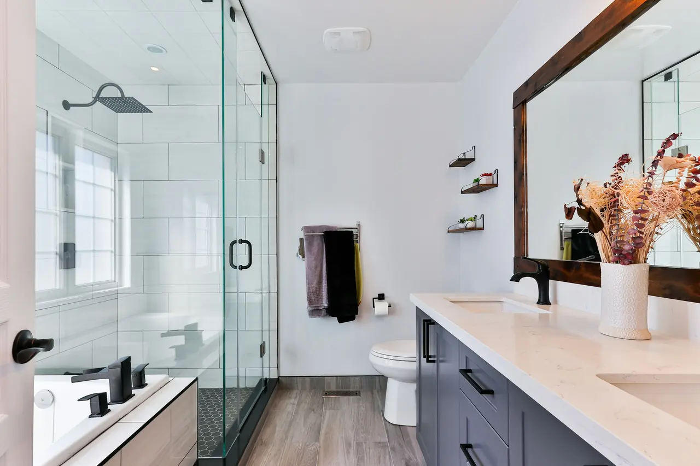
Immagine illustrativaRistrutturazione di bagni
Il bagno rifatto da zero: dalla demolizione al nuovo impianto idraulico, fino alle finiture.
Nella ristrutturazione completa si demoliscono sanitari, rivestimenti e pavimenti fino alla soletta, così da rifare l'impianto idraulico dall'inizio.
- Demolizione di sanitari, rivestimenti e pavimenti
- Nuovo impianto idraulico
- Nuovi rivestimenti, sanitari e finiture
- Rinnovo delle superfici con resine e smalti, quando non è necessaria la demolizione
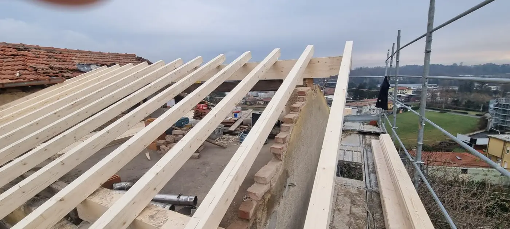
Rifacimento di tetti e coperture
Un tetto sicuro e ben isolato protegge la casa e ne migliora il comfort.
L'intervento parte da un'ispezione dello stato del tetto e arriva alla copertura completata.
- Valutazione dello stato del tetto e dell'isolamento
- Progetto dell'intervento in base alle esigenze del cliente
- Rifacimento della copertura con soluzioni moderne e resistenti
- Isolamento termico e acustico
- Impermeabilizzazione
- Grondaie e pluviali per il corretto smaltimento delle acque
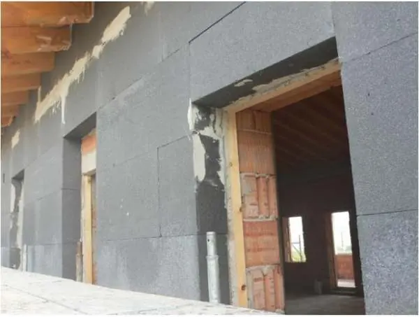
Isolamento termico a cappotto
Un cappotto ben progettato riduce le dispersioni di calore e stabilizza la temperatura interna.
Il sistema viene definito in base alle caratteristiche dell'edificio e alle esigenze del cliente.
- Valutazione preliminare delle esigenze di isolamento
- Progetto del sistema di isolamento
- Posa dei pannelli isolanti sulle superfici esterne
- Intonaci protettivi e rivestimenti di finitura
- Pannelli in polistirene espanso (EPS), lana di roccia o fibra di legno, secondo il progetto
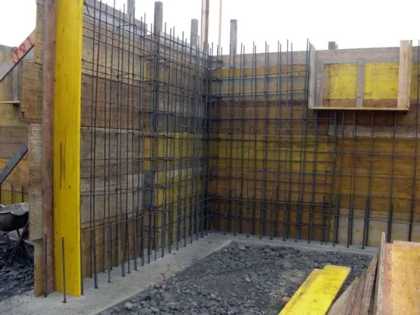
Opere in cemento armato
Fondazioni e strutture portanti sono la base di ogni edificio: vanno progettate e realizzate con precisione.
Per le opere strutturali si lavora con progettazione CAD e BIM e con materiali scelti secondo il progetto.
- Progettazione strutturale con CAD e BIM
- Fondazioni e platee
- Muri, pilastri e solai in cemento armato
- Interventi di rinforzo e consolidamento su edifici esistenti
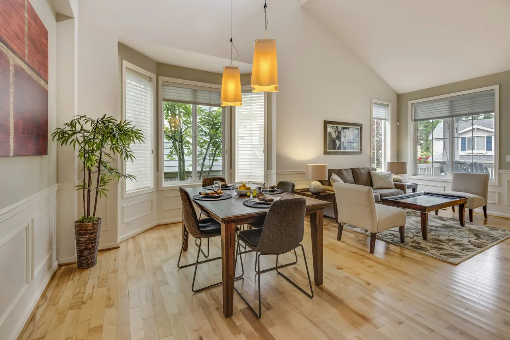
Immagine illustrativaFiniture, pavimenti e rivestimenti
Le finiture determinano il risultato che si vive ogni giorno: per questo meritano la stessa attenzione della struttura.
Pavimenti, pareti e soffitti vengono scelti e realizzati in base alle esigenze estetiche e funzionali del cliente.
- Pavimentazioni
- Rivestimenti di pareti
- Finiture di pareti e soffitti
- Scelta dei materiali insieme al cliente
Lavorazioni di finitura più specifiche, come quelle in cartongesso, vanno verificate caso per caso: indicale nella richiesta di preventivo.
Richiedi informazioni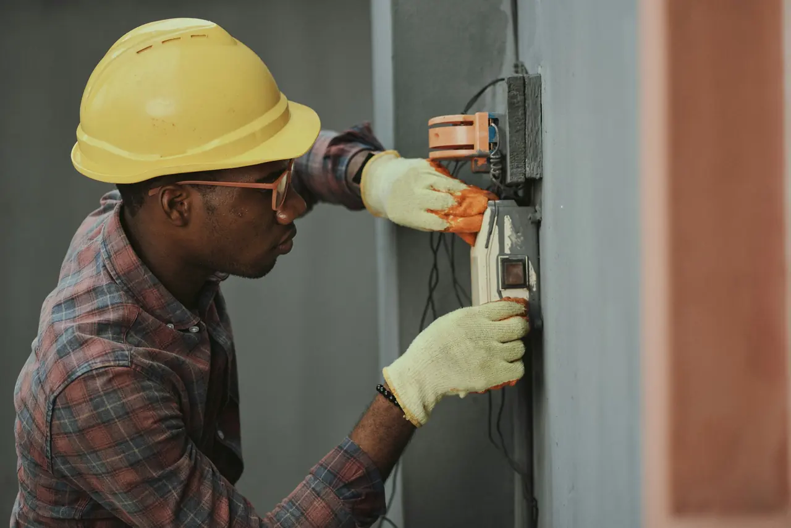
Immagine illustrativaImpianti elettrici e idraulici
Gli impianti fanno parte del cantiere: vanno pianificati insieme alle opere edili per evitare sovrapposizioni e rifacimenti.
Integriamo impianti elettrici e idraulici negli interventi di ristrutturazione e nelle nuove costruzioni.
- Impianti elettrici e idraulici integrati nel programma dei lavori
- Impianti termoidraulici: sistemi radianti a pavimento e termosifoni d'arredo
- Riscaldamento con acqua a bassa temperatura per ottimizzare l'efficienza energetica
Le lavorazioni impiantistiche vengono pianificate e coordinate dall'impresa nell'ambito del cantiere; alcune lavorazioni specialistiche possono essere affidate a installatori e tecnici qualificati, sotto il suo coordinamento.
Richiedi informazioni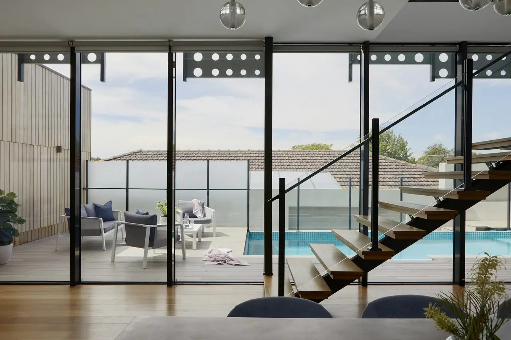
Immagine illustrativaComfort abitativo, climatizzazione e domotica
Sicurezza, comfort e controllo della casa grazie a soluzioni tecnologiche integrate nella ristrutturazione.
Durante le ristrutturazioni è possibile integrare impianti e sistemi di domotica per una casa più sicura e intelligente.
- Domotica wireless, BUS o KNX
- Videosorveglianza, controllo luci e tapparelle motorizzate
- Riscaldamento gestibile tramite app per smartphone
- Pannelli solari termici per l'acqua calda sanitaria e ventilazione meccanica controllata (VMC)
- Climatizzazione multisplit e monosplit, nel rispetto dell'estetica degli edifici storici
Le lavorazioni impiantistiche vengono pianificate e coordinate dall'impresa nell'ambito del cantiere; alcune lavorazioni specialistiche possono essere affidate a installatori e tecnici qualificati, sotto il suo coordinamento.
Richiedi informazioniUn unico coordinamento per più lavorazioni
Un intervento edile coinvolge spesso più figure: tecnici, installatori e artigiani specializzati. L'impresa organizza e coordina le diverse lavorazioni; durante il sopralluogo si chiarisce quali attività servono nel tuo caso e come verranno gestite.
Non trovi il tuo intervento? Scrivici.
Descrivi cosa ti serve: valutiamo insieme la richiesta e, se necessario, fissiamo un sopralluogo.